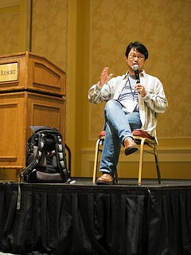
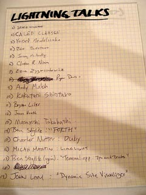

Ruby Conference 2008 レポート
書いた人: 卜部
はじめに
 2001 年から毎年開催されている RubyConf ですが、今年はフロリダ州の Orlando で現地時間11月6日から8日まで開催されました。今回も前回に引き続き、キーノートなどの一部の発表を除き 3 トラックが並列する形式です。どうやら Regional じゃないほうの RubyConf はマルチトラックが今後も続いていきそうです。1
2001 年から毎年開催されている RubyConf ですが、今年はフロリダ州の Orlando で現地時間11月6日から8日まで開催されました。今回も前回に引き続き、キーノートなどの一部の発表を除き 3 トラックが並列する形式です。どうやら Regional じゃないほうの RubyConf はマルチトラックが今後も続いていきそうです。1
スペック
日程
2008 年 11 月 6 日〜 8 日
毎年だいたい 10 月の最後の週か 11 月の最初の週ですね。
場所のこと
会場は Omni ChanpionsGate Hotel, Orland, FL, USA.
Orlando はアメリカの代表的な避寒地/別荘地のようです。実際、会期中も昼間は汗が出るような陽気で、会場には冷房がかかってました。
周辺の施設としてなんといってもディズニーワールド、それからユニバーサルスタジオ。観光地ですね。ケープカナベラルも車で行ける距離だそうです。あと記念すべき第一回の RubyConf 2001 のときの会場 (Tampa) がほど近いです。
参加者
規模は去年と同じくらいか、ちょっと多そう。日本から何人参加だったか把握してない(ごめんなさい)。でも10人はいたはず。
写真
flickr にたくさん。
動画
今年も Confreaks が録画してくれています。すでに全部の動画が公開されており、 Web から閲覧できます。
カンファレンスレポート
前日まで
ちょうど円高の時期だったので、出国する前にいくら換金すべきかねえとか悩みました2。あと飛行機に乗ってから携帯電話の充電器忘れて来たことに気づいて、ちょっと悲しい思いをしたり。
空港について入国手続き後、乗り継ぎコンコースまで歩いてる途中で、大統領選挙の開票速報が流れていて、そういえばそんな話もあったね的な気分になります。ところが合衆国市民の皆さんは、やはり歴史的選挙結果だったためかやや興奮気味の表情の方もちらほらと見受けられました。カンファレンスは基本的にホテルの中なので特に影響なかったですが……
カンファレンス
マルチトラックなので全部は見れませんでしたので、見た中から楽しかったのをいくつか紹介します。
開会の辞と諸注意 by Rich Killmer, David Black
毎年と同じ掛け合い漫才式アナウンスですが、今年はパンフレットにも6月に亡くなった Guy Decoux に言及があったりして、ちょっとしんみりした感じに。
キーノート by まつもとゆきひろ
今回の RubyConf 大きな特徴は、例年なら夜に開催されているキーノートと Q&A が午前中に移動していることです。まつもとさんの今年のテーマは「なぜ Ruby が選ばれるのか」、他の言語として BASIC と Lisp を例にあげて、なぜそれらに比べて現在 Ruby が選択されつつあるかを考察する内容でした。裏テーマ「プログラマの奇妙な愛情」3
Scaling Ruby (without the Rails) by Gregg Pollack
- Scaling Ruby at Rubyconf (発表資料)
- 動画はまだの模様
今回目を引いたのは並列実行とパフォーマンスへの言及が全体的に多めだったことです。みなさん苦労してるんですかねえ。
Gregg Pollack のこの発表ではいまある MRI の何が遅くて、どうすればボトルネックを回避できるかという点を議論していました。たとえば、 ActiveRecord の MySQL コネクタがインタプリタをブロックしてしまうと、本来関係ないはずのスレッドまで巻き込まれて停止してしまうので、パフォーマンスが低下してしまいます。それに1.9ではスレッドは生成するとメモリを豪快に確保するので、 Gregg はあまり好きではないようです。 Fiber に注目しているとのこと。
この発表を聞いた感じだとおすすめはシングルスレッドのプロセスで EventMachine でリクエストを受けておいて、裏で (Rinda とか経由で)ワーカーのプロセスと通信するモデルのようです。
Using Git in Ruby Applications by Scott Chacon
Grit の作者の一人 schaon による Git 解説。
っていうか、 Ruby の話にいく前の Git の仕組みの話がとても面白かったです。 git branch や git merge が実際に Git DB に対してどういう操作を行っているかを図式で解説してくれてとてもためになりました。
Ruby アプリケーションから使うのは、やっぱり Git というかバージョンコントロールが使いたいところで有効という話でした。 Wiki とかね。
Building Distributed Applications by Mark Bates
分散アプリケーションを書くときのやや高レベルなチュートリアルでした。時間の大部分は発表者の作った Mack フレームワークがこんな感じで動いてますよー、という説明。勘違いしてなければ、 require_gem をオーバーロードして Rinda から TupleSpace 経由でクラスのオブジェクトを取ってきてそうです。 Rails にあまり慣れてない私が見た感じでは、アプリケーションの見た目はわりと普通の Rails アプリに見えました。
Unfactoring From Patterns by Rein Henrichs
RubyConf のすごいなあと思うところは、 lightning talks ではない通常の枠でネタ発表をやる人が少なからずいるところです。「コードを難読化してあなたの職を守ろう!」というこの発表は、いかにしてきれいで DRY なコードを読みづらくするかというチュートリアル。ってか “unfactoring” でGoogle 検索してもほとんどヒットしないんですが。まあ実際には逆説的に、そのようなコードは書かないようにしましょうね、という教訓なのです。始終会場からは笑いがあふれていました。英語聞き取れる人はビデオ必見。
すごく無茶な感想を言うと、表層的な難読化の話で終わってしまったのがちょっと。意味論を変えずにコードを変形する部分を掘り下げるとさらに面白そうなんですが。
NeverBlock, trivial non-blocking IO for Ruby by W. Idris Yasser
最近にわかに注目が集まりつつある NeverBlock の作者による解説。エジプトから来られたそうです。日本から来るのとどっちが遠いんでしょう。
NeverBlock は EventMachine と 1.9 の Fiber を使ってほぼ透過的な IO 多重化を提供してくれる仕組みですが、ネットワークソケットの他に ActiveRecord のクエリを多重化できるため、 Rails アプリケーションのパフォーマンス向上に効果がありそうです。発表者によるベンチマークでは 1.9 のスレッドは生成コストが高いので Fiber を使ったほうがよいという結果になっていました。
ライトニングトーク
一日目夜はライトニングトーク……のはずが、みんなばんごはんから帰ってこないという困った状態に。急遽発表順が変更になり、「いる人から」「時間もてきとう」という緩い感じになりました。4
日本からの参加者では角谷さんと高橋さんがそれぞれ LT 枠で発表しました。
- Confreaks - Why don’t you come to RubyKaigi 2009?
- Confreaks - Japanese Rubyists you have not met yet
あと個人的にウケたのは truthiness に関する Yossef Mendelssohn の発表です
日本で普段行う LT とくらべて大変ゆるい空気が流れていて、これもありだなあという気がしました。
Waves: a Resource-Oriented Framework by Dan Yoder
REST こそが Web のあるべき姿だ! という信念のもとに作られている Web フレームワーク Waves (ひょっとして Web に限らないのかもしれませんが)の紹介。完成度高そうです。 HTTP のメソッドを Ruby のメソッドに落とし込んでる所の仕組みがおもしろいです。ただ微妙に学習曲線がありそうなのが、単に私が REST アーキテクチャに不慣れだからだといいのですが。とりあえず触って遊んでみるのがいいのかな。
Ruby Arduino Development by Greg Borenstein
当地では Make: Magazine の影響でなのでしょうか、わりと手を動かして遊ぶ系のガジェットを自作する機運があるようで、毎年一個か二個くらいはハード系発表があるのですが、この発表もそういう流れの一つです。 Arduino の AVR マイコンプログラミングを Ruby からできるようにしたよー、という発表でした。ガジェットの発表はデモがおもしろくてとても楽しめます。
技術的には ruby2c で Ruby スクリプトを C に変換してから AVR-GCC でコンパイルしてそうなので、 ruby2c でここまでできるというのは言語屋さん的には興味深いんじゃないでしょうか。手で書いた場合と比べてどのくらいフットプリント大きくなるんでしょうね?
Better Ruby through Functional Programming by Dean Wampler
Ruby を関数型っぽく使いましょうという話。なぜ関数型かというのは、やはり並列実行とかの野望っぽいです。関数型で宣言的なプログラミングをしても今の Ruby だとオブジェクト生成と GC でかえってパフォーマンスが低下するとか、下手に再帰的定義にするとスタックあふれるよとか、そういうテクニック的な話をしていました。
多分現状だと Ruby 上で宣言的プログラミングに慣れて速度に不満があったら素直に OCaml で書き直した方がいいんじゃないのという風に私は思っちゃうんですけどね。
What All Rubyist Should Know About Threads by Jim Weirich
これも並列実行の話。この発表では特に race condition の解説とロックによる回避の説明をしていました。
この発表は本当に全員が知っておくべき初歩の初歩を解説していたので、その分野のエキスパートが新たに得る知見はなかったかもしれません。しかし、啓蒙というとちょっと構えすぎですが、こういう初心者向けの発表があるのが面白いです。 Ruby 会議ではあまりやらなそうかもという感じ。 Jim Weirich は何年か前にも Continuation のハンズオンをやってたことがあるので、もともとこういうのが得意なのかもしれません。
Using Metrics to Take a Look at Your Code by Jake Scruggs
Metrics ってのはソフトウェア測定です。なんらかの尺度でコードを計測してみるとコードのいろんな問題点が見えてくるよというお話。
通り一遍の知識しかない私の場合はソフトウェア測定というとカバレッジがまず思い浮かびますが(もちろん Ruby にも rcov があります)、その他にもコードの複雑さを数値化してくれる Flog や循環的複雑度を計測してくれる Saikuro の紹介、リビジョン管理システムで更新頻度を確認するなどの方法を紹介していました。
あと最後に「数字に騙されるなよ!」「一回やって終わりじゃなくてちゃんと繰り返し測定しろよ!」とちゃんと注意していたのが好感が持てました。
Writing Code That Doesn’t Suck by Yehuda Katz
テストってなんだろうということをちょっと真面目に考える発表。発表者らが開発する Merb フレームワークでの経験をもとに、どのようなテストを書くべきかを解説していました。ようするに実装詳細をテストしても回帰テストにはならないので界面の部分をテストしましょうという話ですが、じゃあすでにあるコードで一体どこが界面になってどこがそうじゃないのか。なかなか考えさせられます。「インターフェース指向設計」は読んでおいたほうがいいのかな。
Ruby Kata and Sparring by Micah Martin
日本ではなぜか知名度が上昇しない Code Kata の話。Code Kata の Kata ってのは武道の型のことで、型をくりかえし練習することで鍛錬しましょうという勉強方法なわけですが、この発表ではさらに「スパーリング」を提案していて、一人で黙々とやるのもいいけど他人の型を見て学ぶのもいいよね、というお話。発表者も実際に壇上で小さな Kata を実装してみせていたり、さらに公開スパーリングとして参加者を募って同じプログラムを互いに実装しあうコンテストをやるよとアナウンスがあったりしました。
Keynote by Dave Thomas
今年のキーノートは Dave Thomas が喋りました。みなさんの大好きな Ruby はみなさんが好きなままでいればいいけど、もうちょっと変な機能をいろいろ試す必要がある。ので Ruby をもっと色々 fork すべき。というお話でした。
いわゆる Bikeshed をもうちょっと大規模にやろうという提案ですね。たとえば “lambda” とかスペル覚えられないから { … } でもう Proc でよくね? とかそういうやつ。
Questions & Answers with Yukihiro ‘Matz’ Matsumoto
毎年恒例の Roundtable / Town Meeting が今年もありました。
全質問は動画を見ていただくとして、今年も例年と同じ質問をする人やしない人などありましたが、リリースマネージャである私として興味深かったのは1.8.7が気にくわない(1.9に移行する気がない)人がいたことです。1.8どうなるんでしょうね。中の人的には1.9に移らないのはありえないと思うんですが。
A wonderful, awful idea: ruby in the browser by Christopher Nelson
JavaScript で Ruby を実装というか、 Ruby で書いたコードを JavaScript に変換しましょうという話。
Web アプリケーションを作っていると当然 JavaScript は書かないわけにはいけませんが、それは面倒なので Ruby で書きたいというモチベーションのようです。この発表では rubyjs と Red という二つのプロジェクトを紹介していました。一長一短だそうです。 rubyjs はたとえば Kernel#method_missing の実装を pure javascript で書いてあったりしてかなりがんばってそう(つまり遅そう)ですが、Red はそんなことはしていないとか。
Making Your Code CRAPpier by Michael Granger
「ビジュアルデザイン」って何ね?って思ったら、読みやすいコードを書くための指針という話でした。 CRAP ってのは Contrast, Repetition, Alignment, Proximity の頭文字らしいです。
この話は一歩間違うとただの宗教戦争になりそうなのが残念ではありますが、とても示唆に富む発表でした。
見なかったけど興味深い発表
今年の Nathan Talbott の発表は激賞する感想多数でした。
ネタバレを防ぐために詳しくは語りませんので動画を確認してください。
あと、Waves と Merb 以外にも Web フレームワークの発表が何個かありました。
どうもまた Ruby コミュニティに Web フレームワークブームが来てそうですね
初日の11月6日には Ruby Implementor’s Track いう部屋ができていて、各種の Ruby 実装の作者 (+rubyspec の開発者)が発表しあってました。
- Confreaks - Future of RubyVM
- Confreaks - Rubinius
- Confreaks - JRuby: What, Why, How…Try It Now
- Confreaks - What does my Ruby do?
- Confreaks - MacRuby: Ruby for your Mac
- Confreaks - IronRuby
- Confreaks - Ruby Persistence in MagLev
言語趣味の人たちにはおすすめです。
まとめ
RubyConf 今年も楽しかったです。多種多様な発表があるので Rubyist ならどれかは興味のある発表があるはずですし、そんな中でも Ruby コミュニティの流行は見えてきたりして、たとえば今年だと Web フレームワーク来てるねとか、関数型来てるねとか。
最近こそ動画配信とかもありますが、 RubyConf はできれば自分の目で参加するのがおすすめです。会場の空気、参加者たちとの交流、日本ではありえない気候(暑い!)など、体験しないと分からない部分にも刺激がたくさんあります。次回以降はみなさんもぜひ参加してみませんか。
作者について
卜部昌平
Ruby 1.8.6/1.8.7担当リリースマネージャ。リリースマネージャといいつつあんまりリリースしてないのでどうしたものかと悩む。
-
写真のCopyright 2008 by kakutani.com, published under the CC-by license. ↩
-
執筆時点ではさらに円高進んでますが。 ↩
-
写真のCopyright 2008 by supervillain, published under the CC-by license. ↩
-
写真のCopyright 2008 by kakutani.com, published under the CC-by license. ↩